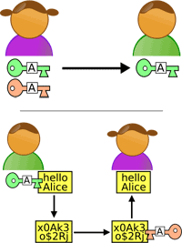
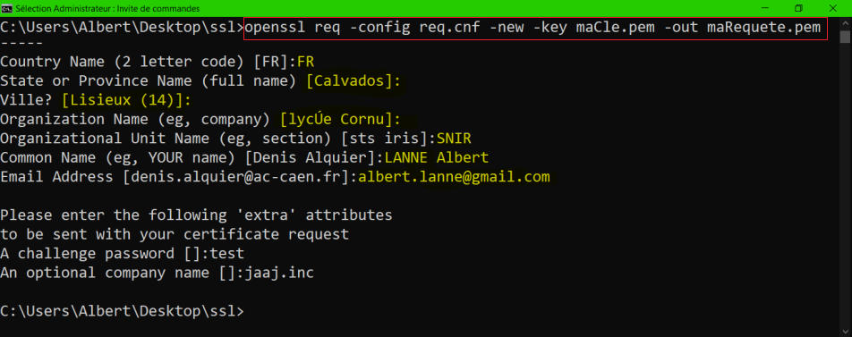
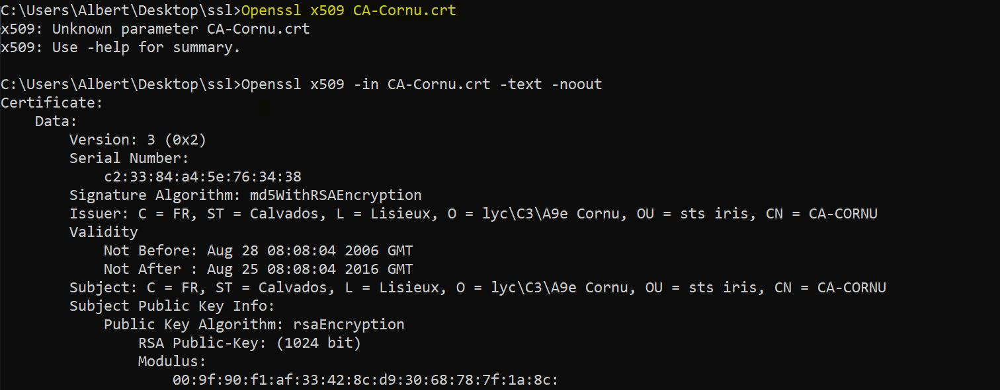
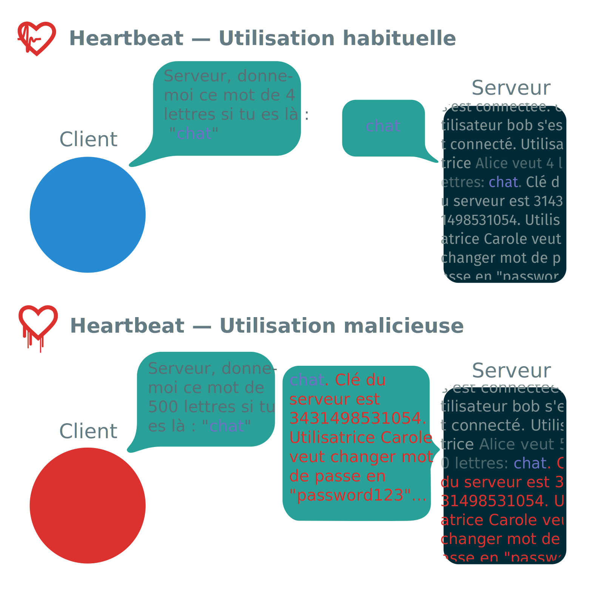

OpenSSL
De la théorie à la pratique
Gabriel Langlois et Albert Lanne
Qu'est-ce que c'est?
Chiffrement symétrique
Chiffrement asymétrique
Les clés
Signer un document


Exemple d'un certificat d'autorité

Openssl verify –Cafile CA-Cornu.crt moncertif.pem
Pour allez plus loin...
Sécurité

Les forks